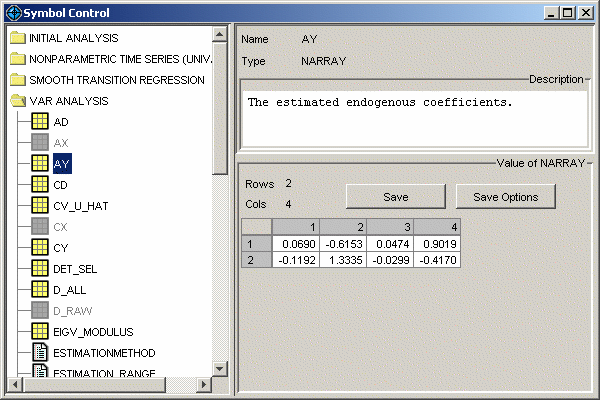

Symbol ControlDescriptionAlmost all variables and intermediate output from computations in JMulTi can be accessed via the CONTROL -> SYMBOL CONTROL menu, or via the toolbar. The icon is . The symbol control can be considered as an expert system that shows additional information to the user. Variables always belong to a certain module. This is visualized by the tree structure from which symbols can be selected. Modules and child components appear by their name. Each symbol is associated with an icon that reflects its type. If a treenode is disabled, then the corresponding symbol is empty. There are global variables which are shown directly under the respective module node. Usually these symbols contain the variables that define a model. There are also local symbols only visible to the respective panel they are defined in. They can be found in child nodes of the top-level module nodes. Local symbols often contain results from specific calculations that do not need to be accessed by other components for further computations, for example test results. Most symbols contain a description of their contents. Exporting DataIt is possible to export NARRAY and SARRAY symbols to data files. For NARRAYs different file formats are possible, see import data for a description of them. This feature can be used to store intermediate results and to use them with other software packages. Output formatting can be adjusted for NARRAYs which only has effect if the DAT format is used. Via a RIGHT mouse click on the data table, the precision and the display type can be changed. However, this does not affect how data is exported.  |